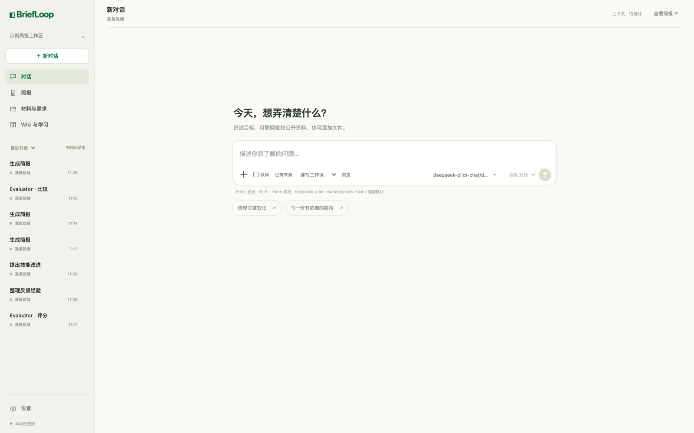
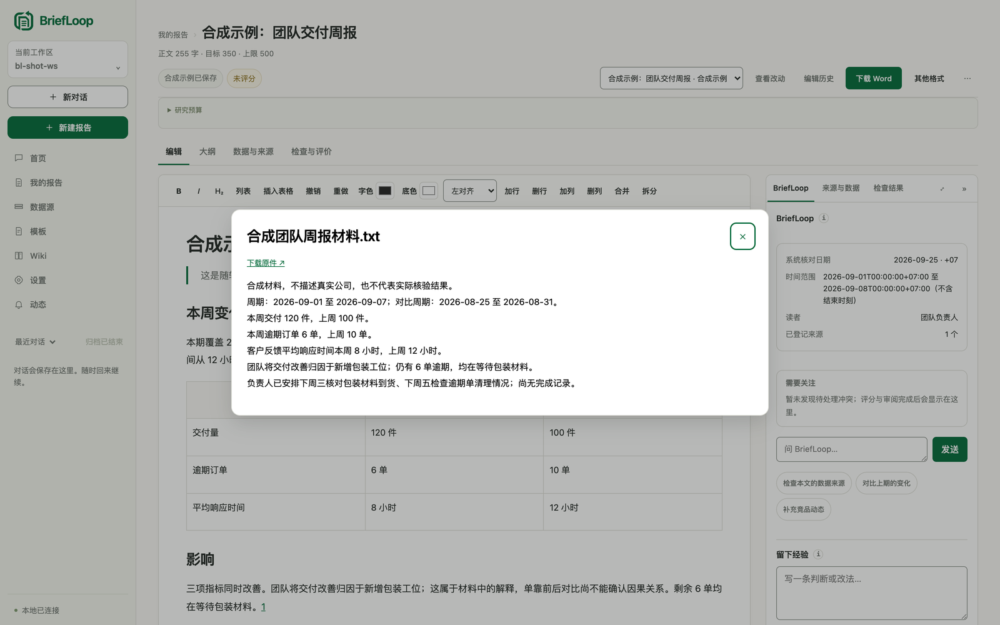
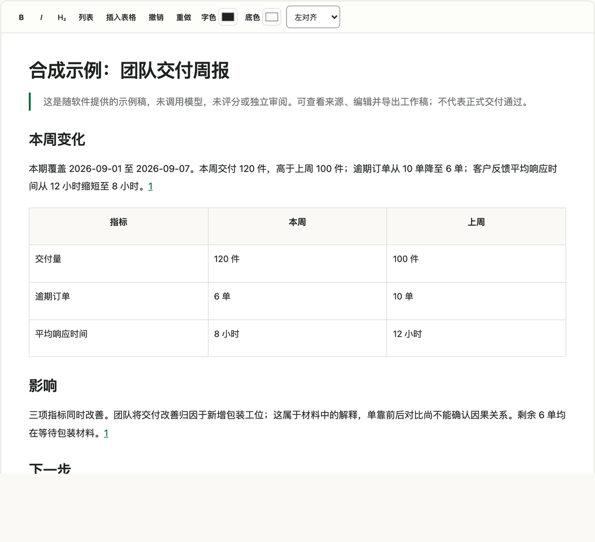

单人 · 本地 · 开源（MIT）· v0.17.1
与材料一起思考。
BriefLoop 是一个跑在你本机上的 Agent 工作台：围绕你的问题找来源、写出可编辑的报告、独立评分，再把反馈沉淀成下一次可用的经验。
不建多人平台，也不替模型的效果打包票——代码只做确定的事，交付由你拍板。

工作原理
四步，把材料变成可追溯的报告。
点开每一步，看它替你做了什么；底部回路让每一次都比上一次更省心。
可追溯交付
每一条重要结论，都能被追问。
正式交付不是「模型说写完了」，而是把结论钉回它来自的那一行原文、那一页 PDF、那一个单元格。
- 主张绑定 重要结论挂到原文行、PDF 页、Excel 单元格与图像，不是一句「据我所知」。正文改过之后，相应绑定需要重新复核。
- 只读复核 Reviewer 只读核对审计包内的实际产物，拒绝包外读取、shell 与写入；宿主不落实权限时直接失败，不降级冒充隔离。
- 审计包 按来源选择原件、摘录或仅定位导出 zip，可离线校验结构与一致性；不含凭据与隐藏推理。
- 版本绑定 正式 Word 与独立审阅、证据版本绑定；旧正式件保留，更正或更新另建版本。

导出审计包
python -m briefloop.audit_bundle /absolute/path/report-audit.zip
三个角色
评价与学习，各司其职。
写稿的 Agent 无权宣告自己的稿子合格；评分的、整理的、提议的，各自独立。
评价者
给产物打分，比较候选是否真的改善；每次使用独立模型会话。分数不等于事实正确率。
经验整理
把反馈与执行观察整理成 Wiki。它是经验，不是当期事实来源。
技能提议
根据 Wiki 提出或改进 Skill；候选未通过验证不会自动启用。
能力
够用，而且每一步都透明。
从聊天到正式交付，同一套工作台里完成；公开工具与子 Agent 的活动始终可见。
对话工作台
发消息、上传材料、选模型、补要求；公开工具与子 Agent 活动可见。
工作区管理
打开已有目录或新建，各自保存对话、来源、稿件、评分与 Wiki。
富文档
可编辑的富文档，格式与内容一起成版本；Markdown 兼容导入导出。
行业定期报告
六类章节按行业与任务裁剪，Word / WPS 导出，可选用户模板与企业背景。
图表与 Excel
复用 XLSX 内嵌图与原生图表，Agent 可用真实数据生成新图并登记来源。
图片与 PDF 页
图片原件保存与预览，PDF 按需渲染指定页供视觉模型查看。
对话整理
归档、回收站、恢复、批量归档；报告与 Wiki 不随对话清理删除。
学习闭环
编辑后自动合并反馈，Maintainer 整理，Proposer 提议，Evaluator 比较决定。
多运行时 · 统一桥接
自动发现本机 CLI 并统一接入：Codex、OpenCode、Claude Code、Kimi、Hermes、Reasonix、MiMo 已接入，Kilo、Kiro、Vibe 已接线待实机验证；模型目录统一读取，也可手填模型 ID。
自定义 API 协议
显式支持 Chat Completions、Responses、Anthropic Messages；保存与测试分开。
独立设置页
模型、API 协议与执行时限集中配置，兼顾浏览器窗口与未来 Electron 共享界面。
合成周报示例
examples/internal-weekly-report 用合成材料体验生成、改稿与 Word 导出，无需真实数据。

预算与篇幅
额度明码标价，不花完也不强求。
整次报告的检索额度由 Scout 共享；字数目标与上限可直接修改。
研究预算
| 预设 | 搜索 | 候选 URL | 全文 URL |
|---|---|---|---|
| 周报 | 12 | 60 | 18 |
| 月报 | 30 | 200 | 45 |
额度适用于受控 Tavily 工具；原生 Codex 搜索无法精确计量，页面会明确区分。达到额度后保留材料、说明缺口，不自动加额。
正文篇幅
| 预设 | 目标字数 | 字数上限 |
|---|---|---|
| 简短 | 800 | 1,000 |
| 标准 | 1,500 | 2,000 |
| 详细 | 2,000 | 2,500 |
中文汉字每字计 1，连续英文或数字串计 1；格式与引用标记不计。旧稿未设置过字数要求时，如实显示「未设置」。
边界
做不到的，我们如实写出来。
不把离线测试说成质量提升证明，也不把模型的打分当成事实保证。
- 检索预算不保证覆盖完整；模型评分不等于事实正确率。
- 本版没有重跑效果或 Token 节省实验，不据此宣称改进。
- 0.17.0 是架构升级，旧工作区不自动迁移——保留旧目录，在新工作区按需导入原始材料；0.17.x 工作区继续保留来源、稿件版本与学习记录。
- Opencode 没有每轮网络硬开关；图片附件仅视觉模型可读。
- Codex 的同等只读受限审阅仍需完成能力验证，不把普通文件只读说成全面隔离。
开始使用
一个仓库，一条命令。
首次启动自动建 .venv、装依赖与随仓库提供的 WikiSkill wheel，打开本机网页。
$ git clone https://github.com/Stahl-G/briefloop.git
$ cd briefloop
$ ./start.sh- 需要 macOS 与 Python 3.11+，以及已安装并完成认证的至少一个受支持 CLI（Codex、OpenCode、Claude Code、Kimi、Hermes、Reasonix、MiMo 已接入；Kilo、Kiro、Vibe 已接线待实机验证）。
- 首次安装依赖需要网络；多运行时桥接需要 Node.js 20+；使用 Tavily 时另行配置自己的 Tavily Key。
- 服务只监听本机；关闭网页不会停止正在执行的任务。
- 可选参数：
./start.sh --workspace ~/my-brief --port 8765 --no-open --backend opencode